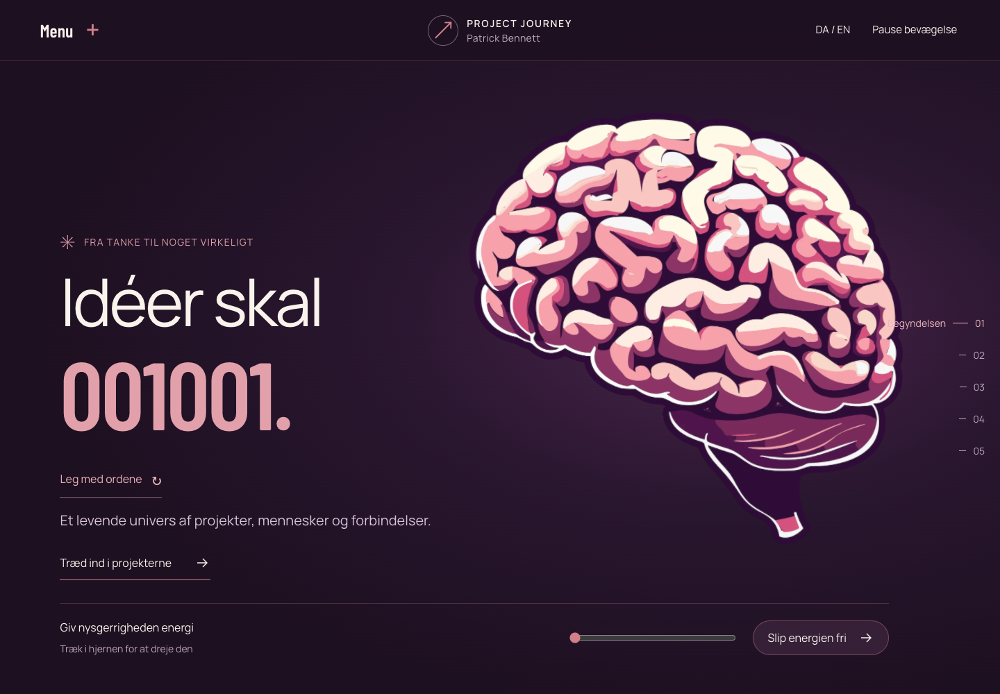
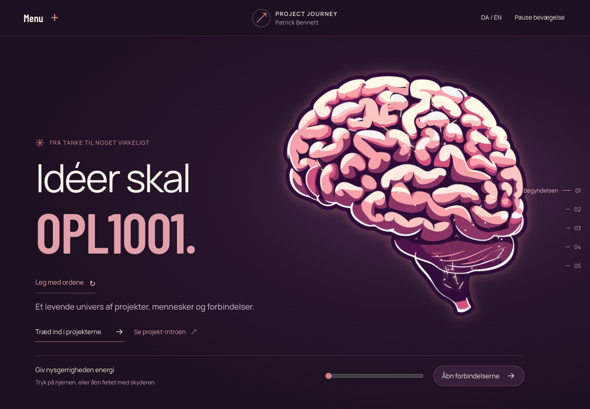
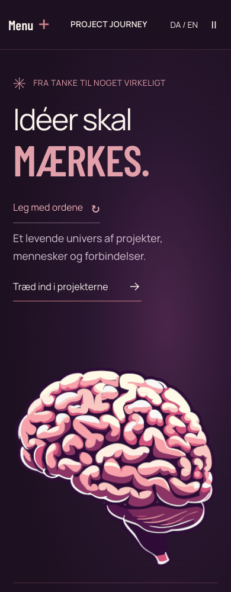
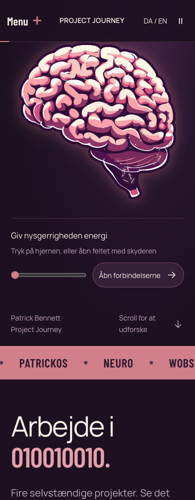
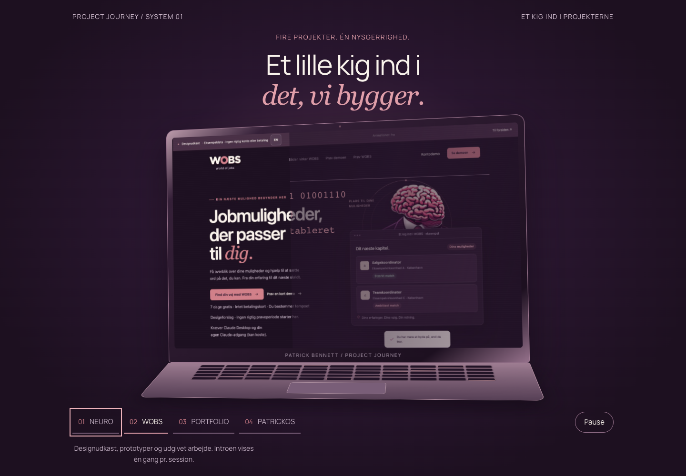
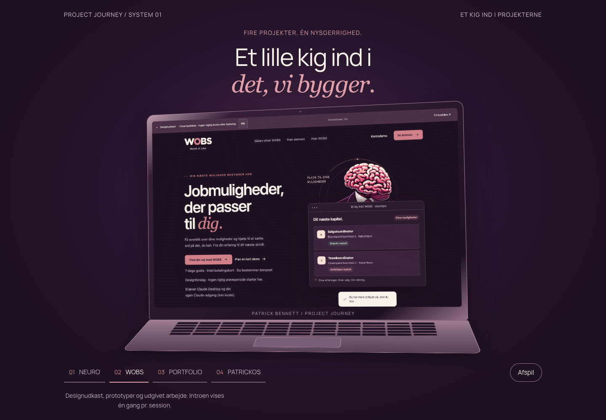
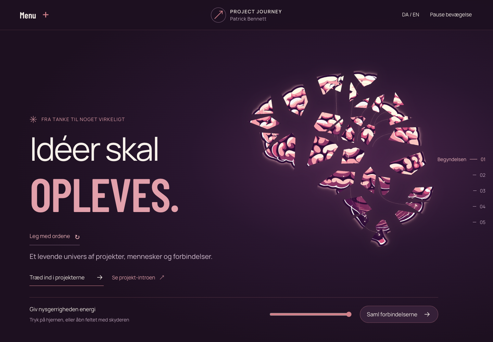
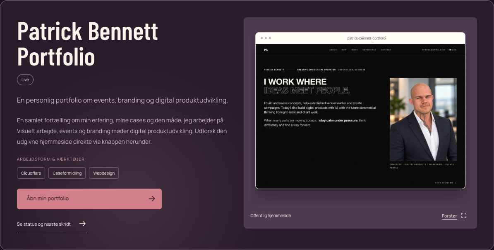
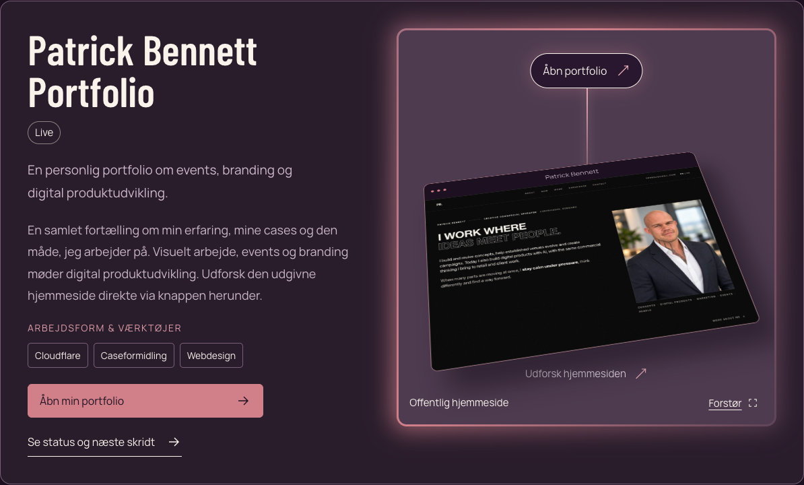
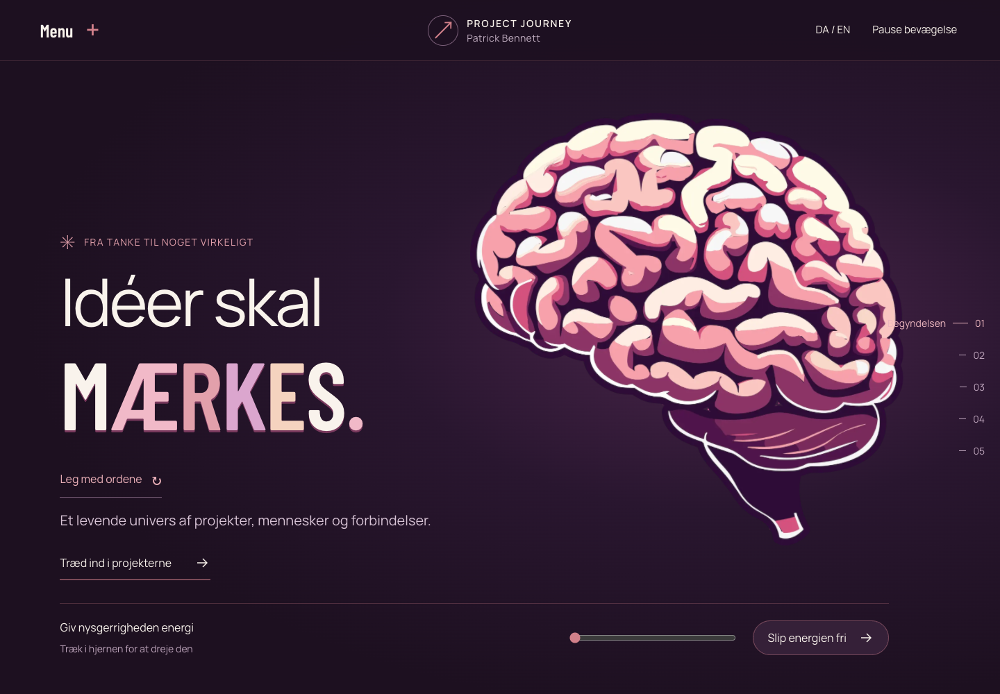

Project Journey · designrejse
Faktiske versionsbilleder. Læs ændringer, kilder og begrænsninger i Markdown-noten.
Forside: før den sidste ændring / efter

Før / tilstand A
Efter / tilstand BMobil: før / efter

Før / tilstand A
Efter / tilstand BNy MacBook-intro

Før / tilstand A
Efter / tilstand BNy hjerne: samlet / åbent felt
Før / tilstand A
Efter / tilstand B Portfolio: før 3D Pin / med 3D Pin

Før / tilstand A
Efter / tilstand BTypografi: flerfarvet forsøg / samlet rosa

Før / tilstand AEfter / tilstand B